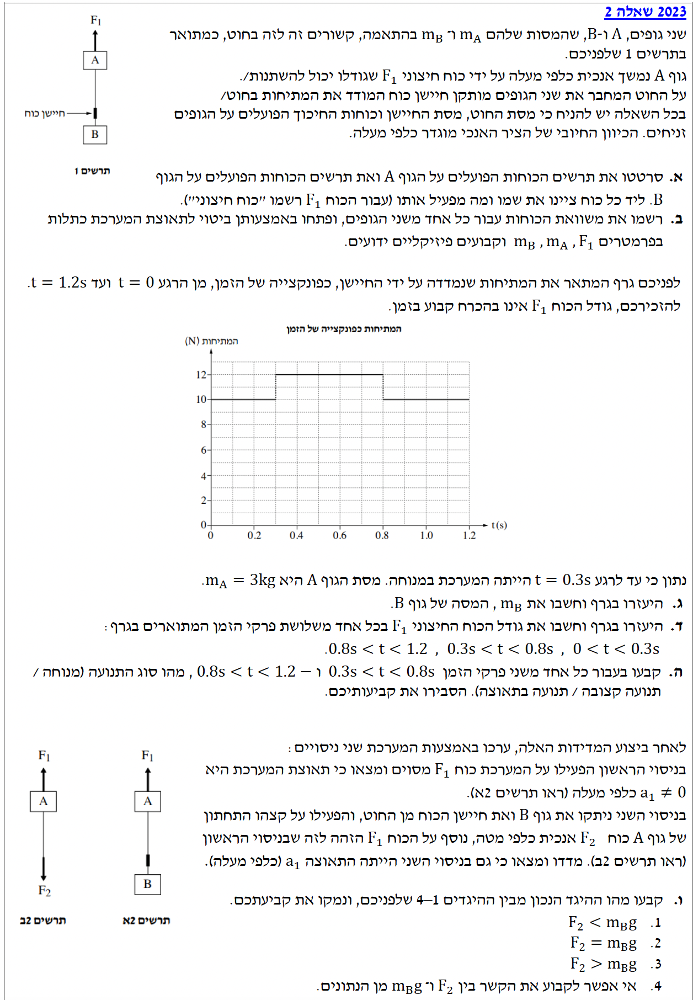
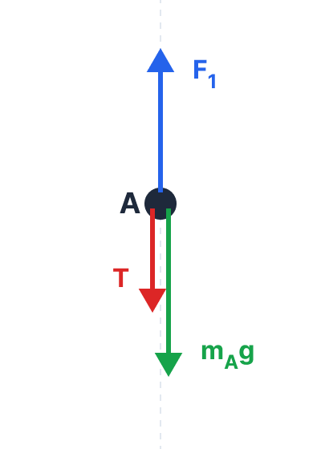
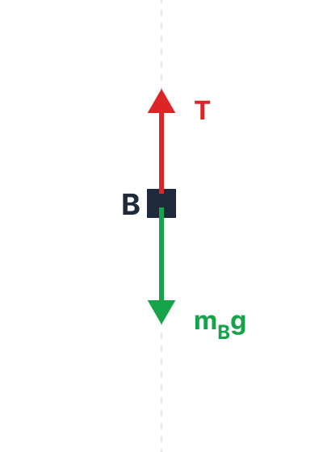

פתרון בגרות בפיזיקה - מכניקה 2023, שאלה 2
מכניקה / 2023 / שאלה 2
הכנת פתרון מוסבר לתלמידים, צעד אחר צעד, מבוסס על עקרונות פיזיקליים מדף הנוסחאות.
עודכן:
--- --:--:--
מבט כללי על השאלה
שאלה זו עוסקת בדינמיקה של מערכת שני גופים הקשורים בחוט ומושפעים מכוח חיצוני במאונך. הפתרון דורש שרטוט תרשימי כוחות מדויקים, שימוש בחוק השני והראשון של ניוטון, והבנת הקשר בין תאוצת המערכת למתיחות בחוט בהתבסס על חוק ההתמדה.

[תמונת השאלה המקורית]
לא נמצאה תמונה בשם question-image.png באותה תיקייה.
מה נתון:
שני גופים, \( A \) ו- \( B \), קשורים בחוט אידיאלי חסר מסה. על גוף \( A \) פועל כוח חיצוני \( F_1 \) כלפי מעלה. בחוט מותקן חיישן כוח שמודד את המתיחות \( T \). המערכת נמצאת בשדה הכובד של כדור הארץ (תאוצת הכובד \( g = 10 \text{ m/s}^2 \)). הכיוון החיובי מוגדר כלפי מעלה. כל היחידות הנתונות בבעיה הן כבר במערכת יחידות MKS ולכן אין צורך בהמרת יחידות בשלב זה.
מה מחפשים:
לשרטט תרשים כוחות חופשי (FBD) נפרד לכל אחד מהגופים \( A \) ו- \( B \), ולציין ליד כל כוח את שמו ומי מפעיל אותו (עבור \( F_1 \) יש לרשום "כוח חיצוני").
נוסחאות ועקרונות בשימוש:
\( W = mg \) כוח הכובד (מופעל על ידי כדור הארץ כלפי מטה).
\( T \) מתיחות חוט (החוט תמיד מושך את הגוף אליו הוא מחובר, ולא דוחף).
פתרון צעד-אחר-צעד:
נצייר תרשים כוחות לכל גוף בנפרד (נקודה שחורה המייצגת את מרכז המסה של הגוף בתוך שטח הגוף הכללי):
תרשים כוחות - גוף A

תרשים כוחות - גוף B

| גוף |
כוח מסומן |
שם הכוח |
מי מפעיל את הכוח? |
| A |
\( F_1 \) |
כוח משיכה כלפי מעלה |
כוח חיצוני |
| \( m_A g \) |
כוח כובד |
כדור הארץ |
| \( T \) |
מתיחות |
החוט (כלפי מטה) |
| B |
\( T \) |
מתיחות |
החוט (כלפי מעלה) |
| \( m_B g \) |
כוח כובד |
כדור הארץ |
מסקנה: סורטטו התרשימים והוגדרו הכוחות כנדרש.
טיפ מורה:
שימו לב! החוט מותח את שני הגופים. לכן, על גוף \( A \) המתיחות פועלת כלפי מטה (החוט מפריע לו לעלות), ואילו על גוף \( B \) המתיחות פועלת כלפי מעלה (החוט מחזיק אותו שלא ייפול). כיוון שהחוט והחיישן אידיאליים וחסרי מסה, גודל המתיחות \( T \) שווה בשני קצות החוט (בהתאם לחוק השלישי של ניוטון: פעולה ותגובה דרך חוט חסר מסה).
מה נתון:
הכוחות המפורטים בתרשימים מסעיף א', נבחר ציר אנכי (נקרא לו ציר \( y \)) שהכיוון החיובי שלו מוגדר כלפי מעלה.
מה מחפשים:
לרשום משוואות כוחות (על פי החוק השני של ניוטון) עבור כל אחד משני הגופים, ולפתח באמצעותן ביטוי פרמטרי לתאוצת המערכת \( a \), כתלות בפרמטרים \( F_1 \), \( m_A \), \( m_B \) וקבועים פיזיקליים ידועים (\( g \)).
נוסחאות ועקרונות בשימוש:
\( \Sigma\vec{F} = m\vec{a} \) החוק השני של ניוטון.
עקרון קינמטי: מכיוון שהחוט מתוח ואינו נמתח (חוט אידיאלי), לשני הגופים יש אותה העתק, אותה מהירות ואותה תאוצה בכל רגע נתון. לכן נסמן את התאוצה של שניהם באות \( a \).
פתרון צעד-אחר-צעד:
שלב 1: רישום משוואות כוחות
נרשום את משוואת הכוחות עבור ציר \( y \) (חיובי כלפי מעלה) לכל גוף בנפרד.
עבור גוף \( A \) פועלים הכוחות \( F_1 \) למעלה, ומתיחות \( T \) וכוח כובד \( m_A g \) למטה:
\[ \Sigma F_{y,A} = F_1 - T - m_A g = m_A a \]
עבור גוף \( B \) פועלת מתיחות \( T \) למעלה, וכוח כובד \( m_B g \) למטה:
\[ \Sigma F_{y,B} = T - m_B g = m_B a \]
שלב 2: פתרון מערכת המשוואות
קיבלנו מערכת של שתי משוואות עם שני נעלמים (\( T \) ו- \( a \)). כדי למצוא את \( a \), נחבר את שתי המשוואות (פעולה זו מבטלת את הנעלם הפנימי \( T \)):
\[ (F_1 - T - m_A g) + (T - m_B g) = m_A a + m_B a \]
נצמצם את \( T \) ונוציא גורמים משותפים:
\[ F_1 - m_A g - m_B g = (m_A + m_B)a \]
\[ F_1 - g(m_A + m_B) = (m_A + m_B)a \]
נבודד את התאוצה \( a \) על ידי חלוקה במסה הכוללת לקבלת המסקנה הסופית.
\[ a = \frac{F_1 - g(m_A + m_B)}{m_A + m_B} \quad \text{or} \quad a = \frac{F_1}{m_A + m_B} - g \]
טיפ מורה:
שימו לב כיצד כוח המתיחות הפנימי \( T \) מתבטל כשמחברים את המשוואות. בניגוד למיתוס נפוץ, שימוש ב"משוואת מערכת" (שבה מתעלמים מכוחות פנימיים) הוא כלי מצוין, לגיטימי ומומלץ כדי למצוא תאוצה במהירות. עם זאת, בסעיף זה התבקשנו במפורש לכתוב משוואה לכל גוף בנפרד, ולכן לא יכולנו לדלג על השלב הזה. בנוסף, משוואות נפרדות הן הדרך היחידה לחשב כוחות פנימיים (כמו המתיחות \( T \)) כאשר נדרש לכך. כמו כן, חשוב מאוד לציין בפתרון הבגרות שבחרנו ציר \( y \) חיובי כלפי מעלה, אחרת התאוצה \( g \) הייתה יכולה לקבל סימן הפוך!
מה נתון:
גרף המתיחות \( T \) כתלות בזמן. נתון כי בפרק הזמן עד לרגע \( t = 0.3 \text{ s} \), המערכת הייתה במנוחה.
מכאן אנו מסיקים כי המהירות קבועה ואפס, ולכן התאוצה היא אפס: \( a = 0 \text{ m/s}^2 \).
מהתבוננות בגרף, בפרק הזמן \( 0 < t < 0.3 \text{ s} \), ערך המתיחות הוא קבוע ושווה: \( T = 10 \text{ N} \).
מסת גוף \( A \) הנתונה: \( m_A = 3 \text{ kg} \).
מה מחפשים:
לחשב את מסת גוף \( B \) (כלומר את \( m_B \)).
נוסחאות ועקרונות בשימוש:
\( \Sigma\vec{F} = 0 \) החוק הראשון של ניוטון (או החוק השני במקרה פרטי של העדר תאוצה).
אנו נשתמש במשוואת הכוחות של גוף \( B \) שפיתחנו בסעיף הקודם.
פתרון צעד-אחר-צעד:
ניקח את משוואת הכוחות של גוף \( B \):
\[ T - m_B g = m_B a \]
נציב את הנתונים החדשים עבור פרק זמן זה: \( T = 10 \text{ N} \), \( g = 10 \text{ m/s}^2 \), ו- \( a = 0 \):
\[ 10 - m_B \cdot 10 = m_B \cdot 0 \]
\[ 10 - 10 m_B = 0 \]
\[ 10 m_B = 10 \]
\[ m_B = 1.00 \text{ kg} \]
טיפ מורה:
מדוע השתמשנו דווקא במשוואה של גוף \( B \)? כי גוף \( A \) "מרגיש" גם את הכוח החיצוני \( F_1 \) שאינו נתון לנו עדיין. גוף \( B \) תלוי רק במתיחות החוט (שניתן לקרוא מהגרף) ובכדור הארץ. זהו כלל אצבע בפתרון בעיות: תמיד התחילו לחלץ נתונים מהגוף שיש לגביו הכי פחות נעלמים!
מה נתון:
מסת גוף \( A \): \( m_A = 3 \text{ kg} \).
מסת גוף \( B \) (שמצאנו): \( m_B = 1 \text{ kg} \).
תאוצת הכובד: \( g = 10 \text{ m/s}^2 \).
מתוך הגרף נקרא את המתיחות \( T \) בכל פרק זמן:
1. עבור \( 0 < t < 0.3 \text{ s} \) נקרא מהגרף: \( T = 10 \text{ N} \)
2. עבור \( 0.3 < t < 0.8 \text{ s} \) נקרא מהגרף: \( T = 12 \text{ N} \)
3. עבור \( 0.8 < t < 1.2 \text{ s} \) נקרא מהגרף: \( T = 10 \text{ N} \)
מה מחפשים:
את גודל הכוח החיצוני \( F_1 \) בכל אחד משלושת פרקי הזמן.
נוסחאות ועקרונות בשימוש:
\( \Sigma\vec{F} = m\vec{a} \) החוק השני של ניוטון.
נשתמש בשתי המשוואות שפיתחנו בסעיף ב'. הדרך היעילה ביותר תהיה: תחילה למצוא את התאוצה \( a \) מהמשוואה של גוף \( B \), ולאחר מכן להציב אותה במשוואה של גוף \( A \) כדי למצוא את \( F_1 \).
ממשוואת גוף B נובע: \( a = \frac{T - m_B g}{m_B} \)
וממשוואת חיבור הכוחות: \( F_1 = (m_A + m_B)(a + g) \)
פתרון צעד-אחר-צעד:
פרק זמן ראשון: \( 0 < t < 0.3 \text{ s} \)
ראינו בסעיף הקודם שהמערכת במנוחה ולכן \( a = 0 \).
\[ F_1 - m_A g - T = m_A \cdot 0 \]
\[ F_1 - 3 \cdot 10 - 10 = 0 \]
\[ F_1 - 40 = 0 \implies F_1 = 40.0 \text{ N} \]
פרק זמן שני: \( 0.3 < t < 0.8 \text{ s} \)
מהגרף אנו קוראים ש- \( T = 12 \text{ N} \). נחשב את התאוצה מהמשוואה של גוף \( B \):
\[ T - m_B g = m_B a \]
\[ 12 - 1 \cdot 10 = 1 \cdot a \]
\[ 2 = a \implies a = 2 \text{ m/s}^2 \]
כעת נציב את התאוצה \( a \) והמתיחות \( T \) במשוואה של גוף \( A \):
\[ F_1 - m_A g - T = m_A a \]
\[ F_1 - 3 \cdot 10 - 12 = 3 \cdot 2 \]
\[ F_1 - 42 = 6 \]
\[ F_1 = 48.0 \text{ N} \]
פרק זמן שלישי: \( 0.8 < t < 1.2 \text{ s} \)
מהגרף רואים ש- \( T = 10 \text{ N} \), בדיוק כמו בפרק הזמן הראשון. מאחר והמתיחות זהה לזו שהייתה כש- \( a=0 \), מסיקים שגם כעת התאוצה התאפסה \( a=0 \) (ניתן לבדוק שוב: \( 10 - 10 = 1 \cdot a \implies a=0 \)). לכן, הצבת כוחות על גוף \( A \) תתן תוצאה זהה לפרק הזמן הראשון:
\[ F_1 = 40.0 \text{ N} \]
מסקנה:
עבור \( 0 < t < 0.3 \text{ s} \): \( F_1 = 40.0 \text{ N} \).
עבור \( 0.3 < t < 0.8 \text{ s} \): \( F_1 = 48.0 \text{ N} \).
עבור \( 0.8 < t < 1.2 \text{ s} \): \( F_1 = 40.0 \text{ N} \).
טיפ מורה:
שימו לב ליחס הישיר! ככל שהכוח החיצוני שמושך את המערכת כלפי מעלה גדול יותר (48 לעומת 40 ניוטון), כך המערכת מאיצה כלפי מעלה בתאוצה גדולה יותר. כדי שגוף \( B \) יאיץ כלפי מעלה, כוח המתיחות שמושך אותו למעלה חייב להיות גדול מכוח הכובד שמושך אותו למטה. לכן התאוצה מתבטאת במתיחות חוט גדולה יותר (12 ניוטון בתאוצה לעומת 10 ניוטון במנוחה). זהו קשר קריטי להבנת דינמיקה!
מה נתון:
התאוצות שחישבנו בסעיף הקודם:
עבור \( 0.3 < t < 0.8 \text{ s} \): התאוצה חיובית, כלומר מכוונת כלפי מעלה \( a = 2 \text{ m/s}^2 \).
עבור \( 0.8 < t < 1.2 \text{ s} \): התאוצה מתאפסת \( a = 0 \text{ m/s}^2 \).
בנוסף נתון שבתחילת התנועה המערכת הייתה במנוחה, לכן גודל המהירות גדל כשהתאוצה פועלת כלפי מעלה.
מה מחפשים:
לקבוע ולנמק מהו סוג התנועה (מנוחה / תנועה קצובה / תנועה בתאוצה) בכל אחד משני פרקי הזמן הללו.
נוסחאות ועקרונות בשימוש:
\( a = \frac{dv}{dt} \) קשר בין תאוצה לסוג תנועה.
אם \( a = \text{const} \neq 0 \) יש לנו תנועה שוות-תאוצה (מהירות שגודלה או כיוונה משתנים בקצב קבוע).
אם \( a = 0 \) והגוף נמצא בתנועה (יש לו מהירות התחלתית מהשלב הקודם), אז הוא נע בתנועה קצובה (מהירות קבועה גודל וכיוון).
פתרון צעד-אחר-צעד:
עבור פרק הזמן \( 0.3 < t < 0.8 \text{ s} \)
חישבנו בסעיף הקודם שהתאוצה היא \( a = +2 \text{ m/s}^2 \). מאחר שברגע \( t=0.3 \) הגוף היה במנוחה (\( v=0 \)) וכעת יש לו תאוצה קבועה כלפי מעלה, גודל המהירות שלו הולך וגדל בכיוון מעלה. הכוח החיצוני לא משתנה בפרק זמן זה, לכן גם התאוצה קבועה.
לכן, זוהי תנועה שוות תאוצה (או: תנועה בתאוצה) שבה גודל המהירות גדל.
עבור פרק הזמן \( 0.8 < t < 1.2 \text{ s} \)
חישבנו שהתאוצה היא אפס (\( a = 0 \)). חשוב לזכור שבתום פרק הזמן הקודם (ברגע \( t=0.8 \)) המערכת כבר צברה מהירות מסוימת כלפי מעלה (ניתן לחשב: \( v = v_0 + at = 0 + 2 \cdot 0.5 = 1 \text{ m/s} \)). מאחר וכעת שקול הכוחות הוא אפס (תאוצה אפס), המהירות נשארת קבועה בגודלה ובכיוונה (חוק ההתמדה).
לכן, זוהי תנועה קצובה (ולא מנוחה!).
מסקנה: בפרק הזמן \( 0.3 < t < 0.8 \text{ s} \) תנועה בתאוצה (שוות תאוצה), ובפרק הזמן \( 0.8 < t < 1.2 \text{ s} \) תנועה קצובה.
טיפ מורה:
מלכודת נפוצה! תלמידים רבים רואים ש- \( a=0 \) ומניחים אוטומטית שזו "מנוחה". חוק ראשון של ניוטון קובע ש- \(\Sigma F = 0\) אומר שהמערכת מתמידה במצבה: אם הייתה במנוחה, תישאר במנוחה. אם נעה, תמשיך לנוע במהירות קבועה. כיוון שבשניות 0.3-0.8 המערכת צברה מהירות, כעת היא ממשיכה עם אותה מהירות כלפי מעלה.
מה נתון:
ניסוי ראשון (תרשים 2א): המערכת המקורית (A מחובר ל-B מלמעלה). הופעל כוח \( F_1 \) שגרם לתאוצה חיובית (כלפי מעלה) שונה מאפס, כלומר \( a_1 > 0 \).
ניסוי שני (תרשים 2ב): חיישן הכוח נותק מגוף B וחובר לקצה התחתון של A. מופעל עליו כוח כלפי מטה בגודל \( F_2 \). במקביל, אותו כוח \( F_1 \) מופעל כלפי מעלה. נמצא כי גם בניסוי השני התאוצה נותרה זהה: \( a_1 \) כלפי מעלה.
מה מחפשים:
לקבוע מבין ההיגדים הנתונים מהו הקשר הנכון בין הכוח החדש \( F_2 \) לבין כוח הכובד של גוף B (\( m_B g \)):
1) \( F_2 < m_B g \)
2) \( F_2 = m_B g \)
3) \( F_2 > m_B g \)
4) אי אפשר לקבוע.
נוסחאות ועקרונות בשימוש:
\( \Sigma\vec{F} = m\vec{a} \) החוק השני של ניוטון.
נשווה את המשוואות הדינמיות של גוף A בשני הניסויים, מתוך ההבנה שהתאוצה \( a_1 \) זהה בשניהם.
פתרון צעד-אחר-צעד:
שלב 1: ניתוח הניסוי הראשון
נתחיל מניתוח הניסוי הראשון. נסמן את המתיחות בניסוי הראשון כ- \( T_1 \). כפי שראינו בסעיף ב', משוואת התנועה של גוף B היא:
\[ T_1 - m_B g = m_B a_1 \]
נעביר אגפים ונבודד את המתיחות \( T_1 \):
\[ T_1 = m_B g + m_B a_1 = m_B(g + a_1) \]
מכיוון שנתון \( a_1 \neq 0 \) והתאוצה היא כלפי מעלה (\( a_1 > 0 \)), נובע בהכרח ש- \( m_B a_1 > 0 \). ולכן, המתיחות \( T_1 \) בניסוי הראשון גדולה מכוח הכובד של B:
\[ T_1 > m_B g \]
שלב 2: השוואה בין הניסויים
כעת, נסתכל על משוואת הכוחות של גוף A בשני הניסויים.
בניסוי הראשון (כוחות: \( F_1 \) מעלה, מתיחות \( T_1 \) מטה, כובד \( m_A g \) מטה):
\[ F_1 - T_1 - m_A g = m_A a_1 \]
בניסוי השני (גוף B נעלם, כוחות על A: \( F_1 \) מעלה, כוח \( F_2 \) מטה, כובד \( m_A g \) מטה):
\[ F_1 - F_2 - m_A g = m_A a_1 \]
מכיוון שהאגף הימני (\( m_A a_1 \)) בשתי המשוואות זהה לחלוטין (אותה תאוצה ואותה מסה A), ושאר הכוחות החיצוניים על גוף A לא השתנו (\( F_1 \) ו- \( m_A g \)), ניתן להשוות את המשוואות ולהסיק חד-משמעית שהכוח המפריע כלפי מטה חייב להיות זהה בשני המקרים כדי לייצר את אותה תאוצה!
משמעות הדבר היא:
\[ F_2 = T_1 \]
וכפי שכבר הוכחנו קודם ש- \( T_1 > m_B g \), נובע מיד ש:
\[ F_2 > m_B g \]
מסקנה: ההיגד הנכון הוא מספר 3: \( F_2 > m_B g \).
טיפ מורה:
אינטואיציה פיזיקלית (טיפ אלופים): כאשר אנו מאיצים אובייקט כלפי מעלה, המתיחות שהחוט מפעיל עליו חייבת להיות גדולה מכוח הכובד (\( m_B g \)) - זאת משום שהחוט צריך גם "להתגבר" על כוח הכובד וגם לספק את הכוח השקול הנוסף הדרוש ליצירת התאוצה (על פי החוק השני של ניוטון). לכן, הכוח החלופי \( F_2 \) שנידרש להפעיל על גוף A בניסוי השני כדי "לחקות" את ההשפעה של גוף B המאיץ, חייב להיות גדול מכוח הכובד של B במנוחה.